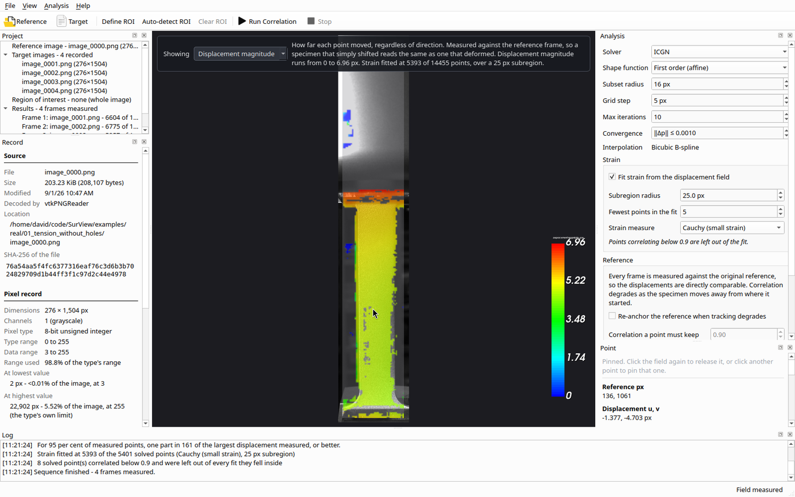
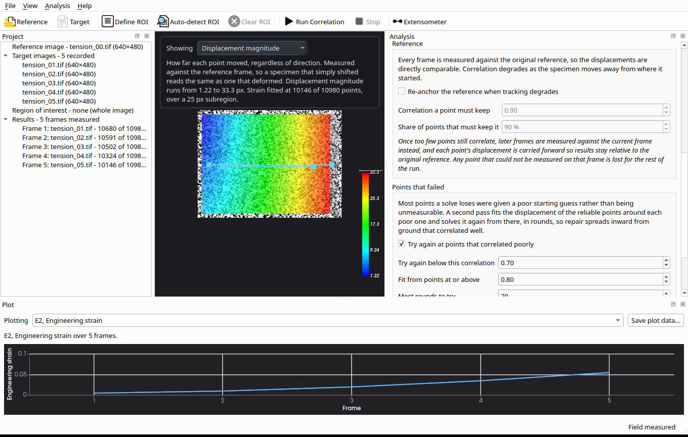
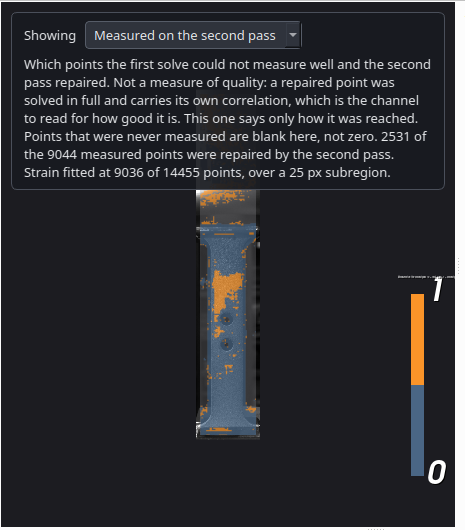
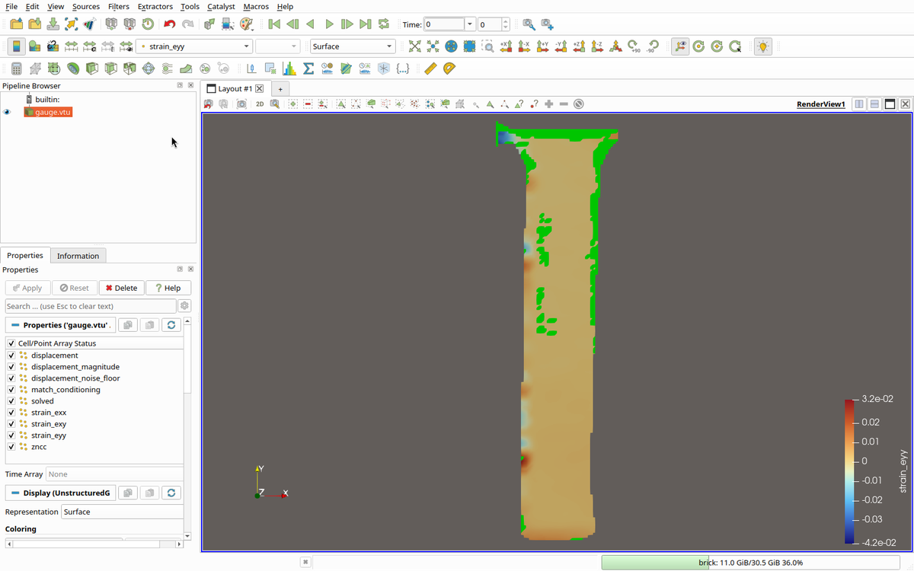
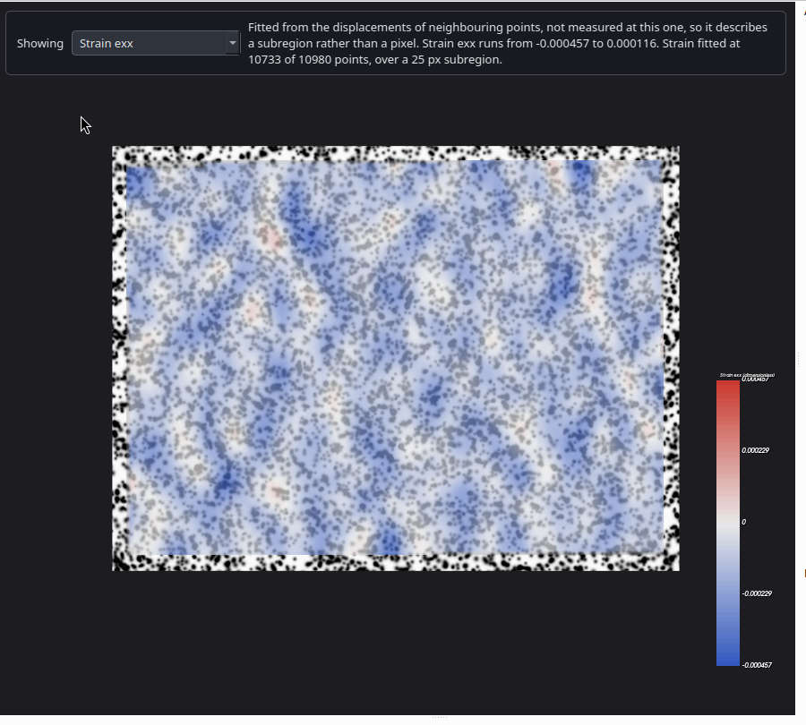
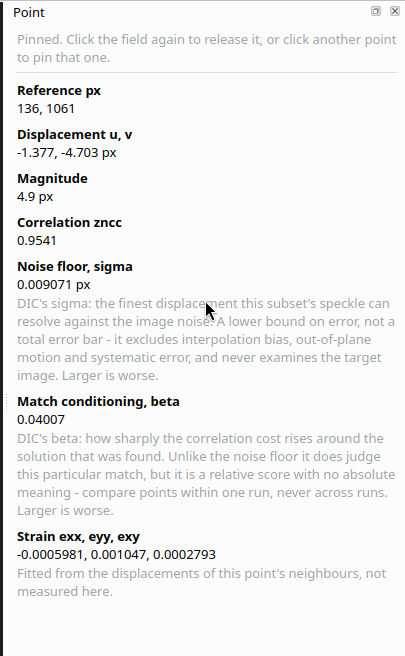
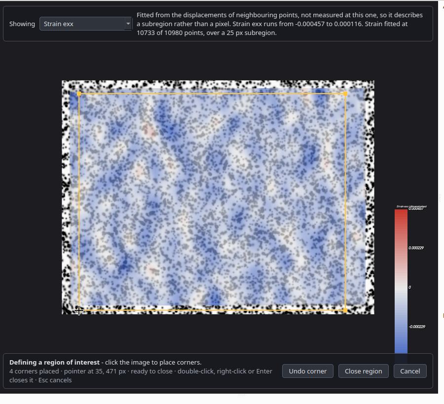

Software for digital image correlation: full-field displacement and strain measurement from speckle images.
Free and open source, LGPL-2.1-or-later · Qt and VTK · correlation by OpenCorr

SurView DIC measures how a speckled specimen moved and deformed between photographs, over a whole loading sequence, reads it back as a loading curve, and reports how far each measured point can be trusted.
What the correlation actually does, in the terms the literature uses.
.vtu VTK unstructured grid, and .csv. Both carry both images with their SHA-256, the solver and its settings, the region, the strain fit and the engine revision.surview-dev: our working fork of
OpenCorr (Jiang,
MPL-2.0). Required, and not interchangeable with upstream today -
auto-detected regions, per-point reliability and per-point failure
reasons are all capability work that lives in the fork. Pinned to an
exact commit, recorded in the repository and compiled into every
export.
A measurement is worth what the record behind it is worth, so SurView keeps both in view.
Every image is recorded as it arrived: path, size, modification time, SHA-256, the decoder that read it, its pixel type, and how much of that type's range the data actually used. Nothing is converted, resampled or normalised on the way in.
Nothing unmeasured is reported as a number. A rejected point, an unfitted strain, an unestablished uncertainty and a frame an extensometer could not read are absent or not-a-number, never zero, in the display, in every plot and in every exported file. Failures are counted by the engine's own reason, and a point repaired by the second pass is marked as one everywhere it appears.
From a running build, measuring the example data that ships with it.

Place a virtual extensometer on the specimen and SurView reads the change in the distance between its two points across every frame, as gauge length, elongation or engineering strain. It measures the distance BETWEEN the anchors, so a specimen that simply moved reports no strain at all. A frame the gauge cannot read breaks the curve and is counted in words beneath it, rather than being joined across as though it had been measured.
This is the synthetic tension set, whose exact strain per frame is stated in the data that ships with it. Over the first four frames the gauge reads 0.005, 0.010, 0.020 and 0.036 against stated strains of 0.005, 0.010, 0.020 and 0.035, and a test in the repository holds it to that.

Most points a solve loses were given a poor starting guess rather than being unmeasurable. A second pass fits the displacement of the reliable points around each failure and solves it again from there, in rounds, so repair spreads inward from ground that correlated well. Here it recovered 2531 of 9044 measured points.
A repaired point is a real measurement with its own correlation, and it is marked as one on the map, in the readout, in the run report and in both export formats. Where the repairs fall tells you something the count cannot: clustered at the holes and edges, as they are here, is the specimen talking.

SurView's own export, written from the File menu and opened with no conversion step: the format is VTK's own. Every channel the run measured is in the array list, and so are the provenance strings.
The gaps are unmeasured points. They are not-a-number rather than zero, so they arrive as holes rather than as a flat region no reader could tell from a measurement.

A specimen turned, not deformed. Strain runs from -0.000457 to 0.000116 across the whole field: zero, to within the method's own noise.
The scale is centred on zero because strain's zero is a physical state. Displacement's is not, so it is scaled differently.

Point at the field for that point's own measurement: displacement, correlation, the noise floor of its subset, how well conditioned the match was, and the strain fitted around it. Click to pin a reading.
Each value carries one sentence on what it does not cover. The noise floor is a lower bound on error, not a total error bar, and it never examines the target image; the conditioning is comparable within a run and meaningless across runs.

Click corners to bound the specimen, or let SurView segment the speckled area from an image-gradient quality map. The mode carries its own instructions, a live corner count, the pointer's position in image pixels, and every way to finish it.
Two kinds, because they answer different questions. Both ship with the source.
Rendered from an analytic speckle pattern rather than warped from an image, so no pixel is ever resampled and the displacement is exact by construction. Each frame carries its deformation gradient, its displacement at the corners and centre, and a noise floor measured from its own pixels.
Photographs of actual specimens, with what a real camera brings: lighting, grips, out-of-plane motion, and background carrying no speckle at all.
From the pyALDIC project, BSD-3-Clause, cited with the data.
SurView builds from source against a pinned engine revision, so a build is always traceable to one exact correlation library. Both clones are required: the second is the correlation engine, and SurView will not configure without it.
git clone https://github.com/katalystnord/SurView.git
git clone -b surview-dev https://github.com/katalystnord/OpenCorr.git
cd SurView
cmake -S . -B build -G Ninja -DCMAKE_BUILD_TYPE=Release
cmake --build build
./build/src/SurView examples/real/01_tension_without_holes/image_000*.pngThe last line opens a real tension sequence with its reference and four loaded frames already imported. Press Run Correlation.
The engine clone is katalystnord/OpenCorr rather than upstream on purpose. It is our working fork of Jiang's OpenCorr, and several things SurView shows on screen are implemented there. Upstream will not build this application as it stands. Fixes that are generally useful go upstream as pull requests rather than staying in the fork, and a script in the repository checks all three links - upstream to fork, our upstreamed fixes by content, and fork to the pinned commit.
SurView DIC and PatternFab are two ends of one workflow: the speckle pattern PatternFab makes is the pattern SurView measures.
Speckle images in, displacement and strain fields out, with every point's reliability reported and full provenance carried into ParaView and FreeCAD.
This tool.
An optimized speckle pattern into a 3D-printed stamp, a laser-cut stencil, a decal or a direct-write file, with the manufacturing constraints applied before anything is made.
katalystnord.github.io/patternfabCorrelation is by OpenCorr (Jiang, MPL-2.0): 2D, stereo and volumetric DVC in one library, and the work to cite for the method.
SurView builds against our working fork of it, which carries the capability work this application needs. It is a staging area for that work and for fixes on their way upstream, not an attempt to run a competing version of OpenCorr.
The application shell is Qt and everything rendered or exported goes through VTK, which is why results open natively in ParaView and FreeCAD rather than through a converter.
SurView DIC is LGPL-2.1-or-later, the licence FreeCAD chose in the same ecosystem. No paid tier and no open core.